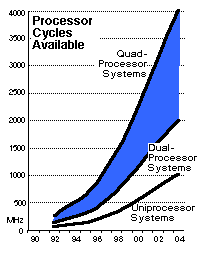
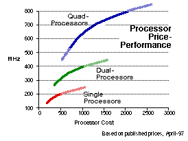
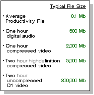
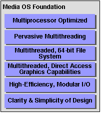
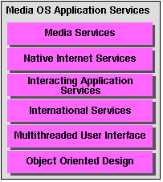
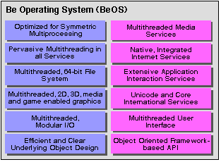

Technical White Paper
The Media OS
The needs of digital content design, not to mention physics
and economics, are coming into conflict with current
OS
architectures. A new definition, the Media OS,
can unlock
the door to more powerful media-based personal
systems,
and extract more performance from the systems
we are using
today.
In 1985, a new concept in personal computing began to take hold. Known as "desktop publishing" and sparked by graphical user interfaces and the invention of the laser printer, this new use for PCs grew from a special interest group into a major market that changed the face of paper publishing, from newsletters to annual reports to advertising. And in the process, computer-based publishing sold millions of people on the usefulness of personal computers, and changed the very nature of their work.
A decade later, desktop publishing as we have known it is coming to an end. It is not the message that is being changed, but the way the message is being conveyed. CD-ROMs provide us with a high capacity distribution mechanism that costs pennies to produce in volume. DVDs are on the horizon, promising to obliterate the CD-ROM and take capacities to new levels. And the Internet is rushing towards universal coverage, able to deliver any type of information, to any user, for the cost of the communications channel and an inexpensive server.
This digital media is changing the way the message is conveyed. Instead of static images on a page, digital media presents us with a mix of text, digital audio, digital video, two-way communications, and 3D graphics and animations.
Content designers everywhere, already computerized by the previous revolution, have taken to the new media like ducks to water, experimenting with audio, video and graphics in a myriad of combinations.
In response to the demand of the new media, production lead times are shrinking from months to days, or even hours. These digital designers are using new sets of software tools to manipulate this high bandwidth information in as real-time as possible.
And in the process, they are bringing the personal computer as we know it to its knees.
Today's Limitations
The computing industry has grown up with promises of doubling processing power and halving equipment costs every 18 months or so. That pace hasn't slowed. We have vastly more powerful hardware today than we had even three years ago.
But the demands of digital media are increasing the need for processing power at an even faster rate. Digital design requires that we squeeze every bit of performance out of our current systems, and that we look to opening new avenues for gaining performance, even as microprocessors continue to advance.
Unfortunately, in the process applications are exceeding what the current generation of operating systems were designed to do. Almost all existing systems were originally designed decades ago, when the idea of personal computers dealing with real-time video, audio, communications and other high-bandwidth applications was practically science fiction. Windows 95 has its roots in DOS, Windows NT in the VAX systems originally designed by DEC, Mac OS in the early ideas of Xerox Parc and Mach in the labs of Carnegie-Mellon, both designed in the late 1970s.
As the importance of audio, video and interactive communications has increased in recent years, we've had to devise increasingly clever -- and complex -- methods of delivering the performance required of media-based applications because the foundations of today's systems were simply not designed with high-bandwidth media in mind.
One example of aging foundations is the use of multiple processors in a single system. The architectures of most of today's mainstream operating systems are optimized for execution on uniprocessor systems, an assumption borne of the days when microprocessors were very expensive. Adding multiprocessor (MP) capability to these systems is difficult, and often goes only half way. To gain the maximum benefit, all operating system services and applications must be written with MP capability in mind, something that is virtually impossible to do without major disruption. Those of today's systems that can make some use of multiple processors do so in a coarse-grain way, failing to take maximum advantage of the hardware resources available.
In addition, as more and more features have been added to today's operating systems, layers of software "silt" have built up upon their architectural foundations. These layers deliver new services, route around services no longer required, provide specialized functions for individual applications that can't be delivered any other way, and, most of all, provide a level of backward compatibility. Unfortunately, as this software silt builds up, it consumes more of the computer's processing power and hardware resources. And it adds to the complexity of the system -- reducing performance, lowering stability, and lengthening the time it takes to deliver new software.
This increasing complexity has had two effects. First, customers are paying for more expensive hardware than they should, just to obtain acceptable performance with mainstream productivity applications. The effort to counteract this problem forms the basis of the network computer (NC) concept -- by simplifying operating systems, moving to modern applications, and removing the silt, computing can become less expensive.
And second, users are not able to take advantage of the real processing power that is inherent in today's advanced microprocessors because of the operating systems silt that lies in the way, making media-based applications more expensive, and less powerful, than they should be. Solving this problem lies at the heart of the Media OS concept.
The Necessities of Digital Media
It's not enough to add a few features and call an operating system a "Media OS." An operating system needs to be architected to deal natively with digital media. Our experiences with today's generation of personal computers provide a glimpse at what is necessary to create a true media-based system, and to squeeze the most possible power out of a system's hardware resources. From this experience, we can identify five broad areas in which a media-based system must excel.
Maximize Processing Power
The power of microprocessors continues to advance at a predictable pace. However, the needs of digital content creators have outstripped even the best efforts of microprocessor makers, and physics, to keep up. A Media OS can't rely simply on single processors to handle the load, which means that it must be multiprocessor capable.
Why are multiprocessor systems important? Today, the power of personal computer systems is generally dependent on a single microprocessor. This means that we must wait for new, faster generations of microprocessors to become available in order to build more powerful personal computers.
Multiprocessing gives us a way around this problem. First, it gives us access to even more powerful systems. We can multiply the effect of increases in microprocessor performance across multiple processors, rather than just one. This can provide access to vastly more powerful systems than we have today, yet with today's PC technologies.
Second, multiprocessing provides us with a more economical way of reaching a given performance point. The highest performance processor, 400 MHz today, costs significantly more than 300 MHz processors. Thus it can cost just as much to put two 300 MHz processors into a system as it does to put a single 400 MHz processor. Yet the two processors combined deliver 600 MHz of available cycles. The result is that using a multiprocessor approach opens a new axis for hardware manufacturers to explore in price-performance -- leading to new performance levels and options for end users.
Opening up new, multiprocessor-based solutions for the mainstream is a key requirement as we take media design into the next century. There are a number of other ways to maximize processor performance. For example, how an operating system implements multiprocessor capability can be even more important than the capability itself. We'll examine this further a bit later in this discussion.
Graphics Power and Flexibility
In addition to consuming massive amounts of processing power, a key characteristic of the work of digital designers is that it involves the manipulation of graphics, preferably in real-time (manipulation with no "lag" or processing time from the user's perspective.) To accomplish this, media-based systems have to address two things involving graphics capabilities.
First they need to take advantage of specialized graphics coprocessors. Graphics co-processing is a specialized type of multiprocessing that can help increase the performance of a system dramatically. This is especially true in 3D graphics and video compression and decompression, where function-specific chips can boost throughput significantly.
Second, the graphics capabilities must be flexible. The types of graphics work being done by digital designers varies greatly. Some do more 3D work than video, others more 2D than 3D, and so on. Because of this, a Media OS must be flexible enough to allow hardware to be configured in the way that's best for the end user. In addition, flexibility and modularity means that graphics hardware can be upgraded as new, more powerful solutions become available, or as the user's needs change.
Access to Large Amounts of Storage
Another key characteristic of digital design is the amount of data required. We have moved from floppy storage, to hard drive storage, to CD-ROMs, providing us with direct access to significantly more data than only a few years ago. Average hard drive sizes have increased from a few hundred megabytes and are now approaching 4 gigabytes.
 But this is nothing compared to what's going to be required in the near future. One hour of digital audio requires about 600 Mb (the capacity of a CD-ROM.) One hour of compressed video, though, requires over 2 gigabytes. The DVD standard for two hours of high-quality, high definition compressed video contains over 5 gigabytes of data. And if you are working with the original, uncompressed image of a two hour movie, as many digital designers want to do prior to compression, the numbers approach 300 gigabytes of data.
A media-based system must deal with multiple, large storage devices. These devices will vary widely in capabilities, and so the storage system also needs to be flexible enough to accommodate these differing abilities. And a Media OS must be sure to take advantage of advances in underlying hardware that will enable this information to be routed through a system and manipulated in real-time.
Internet Communications
Today, it almost goes without saying that Internet capability is a standard option for personal computers. For the digital design crowd, it's a distribution channel for their work, and so is a basic requirement of business.
A media-based system should be Internet-native, based in the TCP/IP protocols and able to access and publish a wide range of Internet based services. Taking advantage of fast Internet networking hardware is the first step. Providing a wide range of Internet application services, from the web, to mail, to secure layers is the next.
Software that Works Together
Lastly, no one who uses personal computers for digital design uses a single piece of software. Most often, we use software "groups", a set of packages that operate on the same underlying data, each doing a set of specific functions. One of the key complaints users have about today's generation of operating systems and applications is that it is often difficult to get these software packages to work together, especially if they are from different vendors.
A Media OS can't solve this problem alone, applications play a key role. But it can make the job a lot easier. Data interchange and scripting capabilities are two methods of approaching this problem. Extensive threading, interapplication messaging, and even the ability to "merge" applications with one another are additional approaches. The more work an operating system does to provide these services, the more likely applications are to take advantage of them.
Defining the Media OS
Given these basic necessities of life for digital design, what should a Media OS look like? Given what we know about software design today, what features would an optimum Media OS have and how would they work together with application software to deliver the best performance and experience for the user?
So that we can better identify the features of a Media OS, we can split the functions of an OS into two broad categories.
The foundation of a true Media OS must be built with real-time media and communications in mind from the start. It must make maximum use of the underlying hardware, and free hardware manufacturers to build ever more powerful, and more economical, systems. The Media OS needs to be built with the high-bandwidth needs of media in mind, from storage to I/O throughput to graphics.
In addition to a solid, media-oriented foundation, a Media OS must also provide application services which allow developers to create powerful applications that deliver on the advantages of the underlying foundation, to do so quickly, and to do so efficiently - with a minimum of reinventing the wheel.
The Media OS Foundation
 The performance and capabilities of any OS are highly dependent on the foundation level services of the OS. These services -- known separately as the kernel, file system, input-output (I/O) system, graphics system, among others -- form the connecting layer between the services applications (and customers) use, and the power of the underlying hardware. Because of this, efficiency and performance delivered within the foundation ripples throughout the computer system. Conversely, problems within the foundation will impact the performance of the entire system.
In order to service the needs of media-based applications and high-bandwidth data, a Media OS should have the following features in its foundation:
Multiprocessor Optimized
As discussed above, basic economics mean that multiprocessor personal computers will grow rapidly in number during the next decade. This means that a Media OS should cast off the uniprocessor assumption used in today's systems, and use an architecture designed to take advantage of two, four, or more processors in a single system.
These processors should be treated as peers in a system, allowing each to execute any portion of application or OS code, and giving each full access to the computer's resources. Often referred to as symmetric multiprocessing, this feature speeds operations, improves efficiency, and importantly, simplifies the task of writing multiprocessor-aware applications.
In order to fully implement symmetric multiprocessing, a number of other "modern" OS concepts also need to be present. Preemptive multitasking allows the computer to switch quickly and efficiently between tasks, and between processors. Virtual memory should be constantly present, allowing for a smooth transition between tasks and efficient memory management. Software drivers and application add-ons should be dynamically loaded to maximize memory usage and enable dynamic reconfiguration.
Lastly, the often complex internal nature of media-based application software today, combined with rapidly shrinking software revision cycles, means that we are developing a situation in which the customer needs to be protected from sliding from the "cutting edge" to the "bleeding edge." To prevent this, a Media OS should provide memory protection between applications -- preventing one application from adversely affecting others. In addition, the Media OS should implement a client-server internal architecture that separates application code and user data from the underlying operating system. By combining these two features, end users can be better assured that they can use the latest applications with a minimum of risk to their data.
Pervasive Multithreading
Basing an operating system on multiprocessing is not enough, however. If we simply use past software programming concepts on top of a multiprocessor architecture, what we'll end up with is a number of processes executing in sequence, rather than in parallel, erasing most of the benefits of multiprocessing. In addition, using older application software concepts can cause what is known as a "scaling problem" with multiprocessor systems where performance does not increase, but rather tops out -- and can even degrade -- as the number of processors increases.
To gain the most performance, increase parallelism, and reduce the scaling problem, a Media OS needs to employ a concept called pervasive multithreading. Multithreading takes large tasks, such as applications, and breaks them down into a myriad of smaller tasks which can be performed in parallel. Pervasive multithreading means that this approach is taken throughout the operating system and applications, from the kernel up to and including graphics that the user views within windows.
In many ways, pervasive multithreading is as fundamental a shift to software design as the introduction of GUI systems were in the early 1980s. But rather than simply visual differences, the user will see significant performance and capability increases as a result.
Pervasive multithreading allows the Media OS to rapidly switch between dozens, often hundreds of smaller tasks quickly. These tasks can be rapidly deployed on multiple processors, and rapidly reassigned when the system's processing load changes. Pervasive multithreading is often referred to as "fine grain" multithreading, because of the view that it is easier to move grains of sand through, say, an hour glass, than larger rocks and boulders.
The Media OS implements every OS service, from the fundamental level up through application services, using pervasive multithreading. In fact, a Media OS will go further and ensure that applications are written in this manner as well.
But how does this highly multithreaded design affect single processor systems? As it turns out, pervasive multithreading also helps in these cases, allowing preemptive multitasking on a single processor to be smoother, and more responsive to changes in tasks such as when the user decides to open a new application.
Multithreaded 64-bit File System
Many of us are aware of past transitions in processor architectures, from 16-bit systems to 32-bit systems, and in the future to 64-bit systems. But an equally important transition is taking place in how computers deal with storage. As media-based applications have become more mainstream, the size of our storage devices -- from hard disks, to Zip and Jaz drives, to optical and high capacity magnetic media -- has increased dramatically.
And in doing so, we are hitting a basic limit. If an operating system implements a "32-bit" file system, the maximum file size a device can natively hold is 4 gigabytes. While 4 gigabytes seemed like a massive amount of storage only a few years ago, today we can envision media-based applications using files which easily exceed this limit. Even with today's applications we have reached these limits, and there are an increasing number of complex solutions to get around this limit in today's operating systems.
But a simpler solution exists -- move the basic file system design to 64-bits. This increases the theoretical capacity of a single device to roughly 18 million terabytes (18 billion gigabytes), enough to give drive manufacturers a reasonable amount of running space in the short term. By moving the file system design to 64-bits, we also free the application developer from dealing with specialized solutions to the 4 gigabyte limit, and we improve overall efficiency by avoiding "kludges" to a basic foundation-level service.
In addition, a Media OS file system should integrate basic database-type capabilities for applications, allowing key attributes and descriptions of the contents of files to be searched across and indexed for faster access. This speeds overall access in situations such as the often thousands of files that make up a large web site.
Multithreaded, Direct Access Graphics Capabilities
The Media OS is expected to deal natively with compressed video streams, and interactive 3D graphics, in addition to the 2D graphics of the past. Both compressed video and 3D graphics require a large amount of processing power to manipulate interactively. Compressed video requires the power to both compress and decompress large amounts of video data, with the objective of doing so in real-time. Interactive 3D graphics consume even more processing power because a 3D scene must be reconstructed entirely from mathematical representations.
Further, the field of computer graphics is advancing rapidly, which means that hardware is changing rapidly. Multiprocessor systems are sure to be a boon to this field, but in addition there are specialized video processors and 3D graphics processors that can speed up graphics operations considerably. These graphics processors can be thought of as "specialists" in a multiprocessor system, and to make maximum use of them, it's extremely useful to start with a multiprocessor-aware, multithreaded operating system and multithreaded applications.
Because of these factors, the Media OS should not make too many assumptions about the type of graphics hardware that may be present, nor assumptions about what type of capabilities application software might have. What this means is that a Media OS should have a modular, dynamic, multithreaded graphics system. Graphics hardware drivers should be modular and dynamically loaded. Graphics APIs should allow various functions to be handled in OS-level software, or to be overridden by hardware capabilities or application-level functions. And these APIs should assume that there are multiple general and specialized processors in a single system, and be able to dynamically allocate graphics tasks among these resources.
And perhaps most importantly, applications need to have direct access to the underlying graphics hardware, when desired. Providing this capability runs against the grain of conventional modern OS design, which states that the underlying hardware should be abstracted from applications for protection and security reasons. However the reality of graphics design during the last decade, and the anticipation of change in the next decade, means that providing the user with the fastest, most interactive media system will sometimes mean that an application needs direct access to hardware. It is the goal of a Media OS to allow this to happen in as efficient, and safe, a method as possible.
High-Efficiency, Modular I/O
With the microprocessors and graphics processors gaining speed, the input/output (I/O) system of a computer can rapidly become a bottleneck. This system moves data from storage (like hard drives) to memory, and back again. In addition to storage, there is a wide range of other devices, such as digital cameras, video cameras and scanners which use the I/O system to push data into and out of the computer. In the case of raw professional video, up to 42 megabytes per second has to be moved through the system.
Fortunately, hardware designers are working as rapidly in this area as they are in graphics. So, as with graphics, the Media OS needs to provide a modular, dynamic, multithreaded I/O system. I/O drivers should be dynamically loaded and unloaded, allowing for on-the-fly reconfiguration. And they should be multiprocessor enabled.
Clarity & Simplicity of Design
Lastly, there is a needed characteristic of the Media OS which is less deterministic, but no less important. In the foundation of a Media OS, the clarity and simplicity of the overall architecture has a profound effect on the performance of the system, and on what type of application software becomes available.
Efficiency in Execution. The simpler the design, the more efficient the OS. This profound statement has been proven over thirty years of personal computer design, yet we are using very complex systems today, and are losing a great deal of performance in the process. A simple design and API means fewer mode of operations, smaller code bases, and faster performance.
Efficiency in Building Software. Simplicity is not enough, clarity must also be a characteristic of the API. Clarity in design means that programmers can easily grasp the pros and cons to various approaches to application design. New software can be produced faster, with fewer people. The capabilities of media-based applications can be complex, clarity in the design of a Media OS means that less time is spent simply figuring out how to make the OS work, and more time on the design of applications.
Clarity and simplicity imply that a operating system should be based on the concepts of object-oriented programming, but a Media OS must go beyond. The objects found within the Media OS need to be as few as possible, as powerful as possible, and as flexible as possible. Adding thousands of objects to an OS may accomplish the task of enabling reusable code, but it increases complexity -- potentially slowing both performance and the emergence of new applications.
The Media OS Application Services
 Above the foundation of the Media OS lies a wealth of software known collectively as application services. The depth and breadth of these services prohibit a detailed description of all of the possibilities, but there are six areas of application services which are of exceptional importance in a Media OS.
Media Services
Of course, any Media OS should embody a wide range of media and data services. Of these, the most important fall into three categories:
Format Translation Services. The various forms of digital media come in a wide variety of formats. The Media OS should provide standardized tools for converting between these formats, and for adding new formats as they are defined.
Manipulation Services. Usually dependent on the type of data being manipulated, a wide range of standard and non-standard manipulation services should be provided by a Media OS -- with a focus on those services which can be used by a wide variety of applications.
Data Access Services. Hand-in-hand with the foundation I/O services, the Media OS should provide a variety of standard data access services for storage, interactive and network devices.
Native Internet Services
One of the key reasons for the popularity of the Internet is that Internet-based services are standardized. This allows any type of system to interact with any other computer on the Internet without regard for processor type, OS, or application. What this also means is that Internet services can be integrated into a Media OS so that applications do not have to duplicate code.
The Media OS should go further, however. For example, the Internet uses a data-type definition standard known as MIME for many types of services. The Media OS should use MIME types natively, better ensuring the integration of local data with that found across the Internet, and easing the chore of publishing information across the network.
"Interacting Application" Services
Digital designers don't use one software tool to get a job done, they use groups of tools each handling specific functions. A Media OS needs to provide services to ensure that applications work together smoothly. Among these capabilities:
Extensive Messaging Services. In a pervasive multithreaded environment, it's important to have extensive messaging capabilities between applications, and even between threads within applications. If integrated correctly, this messaging allows applications to interact at even very low levels to accomplish a task.
Scripting. At a higher level than messaging, applications should be able to publish messages they understand to other applications and to the user, allowing scripting tools to be built which give the user control over how applications interact to accomplish very large scale tasks.
Transplant Capabilities. The integration of applications and data can go even a step further in a pervasive multithreaded environment. Parts of one application and its data can be merged into another to add capability and to accomplish tasks that would otherwise be impossible.
International Services
Digital design cuts across national boundaries. The Internet is tying millions together seamlessly around the globe. It is no longer acceptable to produce software that understands only one language. The Media OS is no exception, and should provide services which applications can use to "go worldwide."
There are many foundations upon which international services can be built. However, the advent of Java as both a programming language and an Internet run time environment means that Unicode, which is used by Java, is the preferred foundation for a Media OS.
Multithreaded User Interface
The goal of digital media application design is to provide as much direct manipulation of media objects as possible, in as real-time a way as possible. What this means is that by interacting with the user interface of the OS and of applications, the user can initiate any number of very processor-intensive tasks.
To ensure that the computer remains as responsive to the user as possible, even under heavy loads, the design of the user interface needs to employ pervasive multithreading. As few dependencies as possible should be created. The Media OS can accomplish this, in its own UI as well as within applications, by ensuring that the basic interface elements used by all applications -- windows, views, menus, etc. -- are designed to be pervasively multithreaded. In this way, it's virtually impossible to design a single threaded application for a Media OS.
The complexity and variety of options involved in digital content design also means that these applications take advantage of large amounts of screen real estate and large numbers of user interface elements. The Media OS should provide a wide set of standardized elements from which to choose. At the same time, the OS itself should provide a clean, uncluttered UI -- to avoid adding to already complicated applications.
Object Oriented Design
Perhaps the most important aspect of application services in a Media OS is the concept of object-oriented design. The basics of object-oriented design are embodied in programming languages such as C++ and Java. But the benefits of object-oriented design -- faster software development, better integration between applications, and clarity in design -- cannot be achieved unless the entire OS follows object-oriented concepts.
But adopting object-oriented concepts is not enough. As with the foundation services, clarity and simplicity of design within the applications service objects is essential. Again, defining thousands of objects may allow a large amount of code to be reused, but only at cost of complexity and slower software development.
The Media OS: Be's Philosophy and Goal
As the Internet spreads, and as electronic media becomes more prevalent, the needs of digital content design and the aging architectures of our current mainstream operating systems are coming into conflict. The design of a Media OS can unlock the door to much more powerful personal computers, and extract more performance from the systems we are using today.
In this document, we've taken a look at the demands of digital media design, and defined a new type of operating environment, the Media OS, which will be needed if we are to take personal computers to new levels of price-performance and functionality -- levels that aren't just nice to have, but required for digital content design.
In 1996, Be, Inc. delivered to software developers the initial versions of a new operating system, the Be Operating System (BeOS). In 1997, with the shipment of the BeOS for PowerPC, Be made the BeOS available to a wide public audience for the first time. And in 1998, Be shipped the BeOS Release 3 for Intel Architecture, increasing the base of potential customers by an order of magnitude.
Be did not take an existing operating system and transform it into a Media OS. As we've discussed here, such a transformation would be less than optimal, and potentially impossible. The engineers at Be started with the concept of the Media OS, and used it as the underlying philosophy and goal of the BeOS. The BeOS is designed to be the first, true, Media OS.

Underlying this design is a philosophy that states that the goal of a Media OS, and thus the BeOS, is to, as much as possible, get out of the way and apply the full power of the underlying hardware directly to the task at hand. In this way, the BeOS allows personal computers to achieve new levels of price-performance, especially in interactive design applications.
Are we there yet? Is the BeOS the optimum, complete Media OS? Frankly, no. The Media OS is a goal and a philosophy, the definition of a system that will keep evolving over time as the industry learns more about software and hardware design.
We at Be believe that software is never "finished." There are always new applications and new levels of performance. But inherent in a true Media OS, like the BeOS, is the ability to advance the operating system in a modular, dynamic manner -- even across the Internet -- and faster than with today's mainstream OS architectures. So as the needs of digital content design changes and evolves, so will the BeOS.
If you'd like to learn more about the BeOS, and the reality of a true Media OS, take a look at the details of the BeOS at Be's web site at http://www.be.com/products/
Information on the Be Operating System:
- Be's Media OS Whitepaper
- BeOS Data Sheet
- BeOS Specifications
- BeOS Tour
Copyright ©1998 Be, Inc. Be is a registered trademark, and BeOS, BeBox, BeWare, GeekPort, the Be logo and the BeOS logo are trademarks of Be, Inc. All other trademarks mentioned are the property of their respective owners. Icons used herein are the property of Be Inc. All rights reserved.